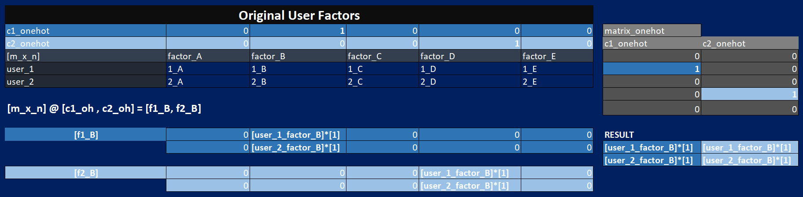
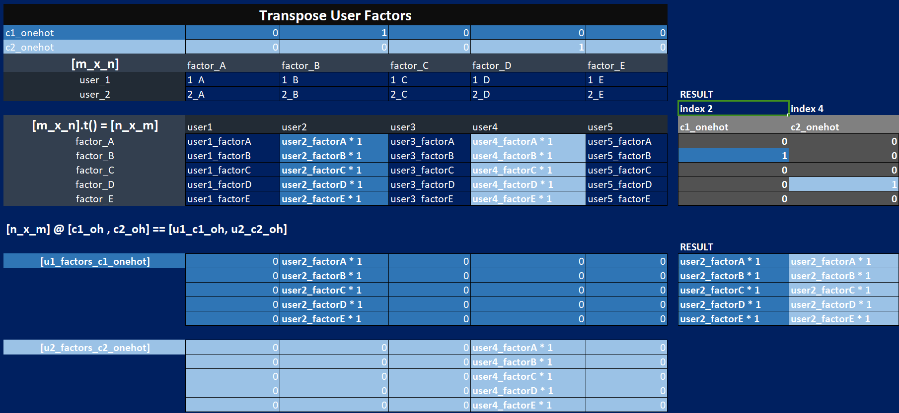

# 1. import libraries
from fastai.data.external import untar_data # unzip the files
from fastai.data.external import URLs # urls, usually zip files
import os
import pandas as pd, numpy as np
import torch
from fastai.torch_core import one_hot
path = untar_data(URLs.ML_100k) # path = Path('/home/tonydevs/.fastai/data/ml-100k')
1. Introduction
One very common problem to solve is when you have:
- a number of users and
- a number of products, and you want to
- recommend which products are most likely to be useful for which users.
There are many variations of this:
- recommending movies (such as on Netflix),
- figuring out what to highlight for a user on a home page,
- deciding what stories to show in a social media feed, and so forth.
There is a general solution to this problem, called collaborative filtering:
- look at what products the current user has used or liked,
- find other users that have used or liked similar products, and then
- recommend other products that those users have used or liked.
2. Import Data
- user ratings data for movies watched (only has movie IDs)
- movies data (to get the movie names)
2.1 Available files
path = untar_data(URLs.ML_100k)
os.listdir(path)['ub.base',
'u.data',
'u4.test',
'u3.test',
'ua.test',
'ub.test',
'u2.base',
'u1.test',
'u.info',
'README',
'mku.sh',
'u.genre',
'u3.base',
'u4.base',
'u.item',
'u.occupation',
'u5.base',
'ua.base',
'allbut.pl',
'u5.test',
'u2.test',
'u1.base',
'u.user']2.2 Checking out the README
def get_info(folder_name):
info_path = os.path.join(path,folder_name)
with open(info_path) as f:
info_content = f.read()
print(info_content)
# get_info('README')2.2.1 README - u.data
- The full u data set, 100000 ratings by 943 users on 1682 items etc…
- This is a tab separated list of user id | item id | rating | timestamp.
2.2.2 README - u.item
- Information about the items (movies);
- This is a tab separated list of movie id | movie title | release date | video release date | etc…
2.3 Movies data
2.3.1 Codec/Encoding import problem
There is a code problem with importing the movies dataset.
movies_df = pd.read_csv(path/'u.item')--------------------------------------------------------------------------- UnicodeDecodeError Traceback (most recent call last) Cell In[13], line 1 ----> 1 movies_df = pd.read_csv(path/'u.item') File ~/miniforge3/envs/fast/lib/python3.12/site-packages/pandas/io/parsers/readers.py:1026, in read_csv(filepath_or_buffer, sep, delimiter, header, names, index_col, usecols, dtype, engine, converters, true_values, false_values, skipinitialspace, skiprows, skipfooter, nrows, na_values, keep_default_na, na_filter, verbose, skip_blank_lines, parse_dates, infer_datetime_format, keep_date_col, date_parser, date_format, dayfirst, cache_dates, iterator, chunksize, compression, thousands, decimal, lineterminator, quotechar, quoting, doublequote, escapechar, comment, encoding, encoding_errors, dialect, on_bad_lines, delim_whitespace, low_memory, memory_map, float_precision, storage_options, dtype_backend) 1013 kwds_defaults = _refine_defaults_read( 1014 dialect, 1015 delimiter, (...) 1022 dtype_backend=dtype_backend, 1023 ) 1024 kwds.update(kwds_defaults) -> 1026 return _read(filepath_or_buffer, kwds) File ~/miniforge3/envs/fast/lib/python3.12/site-packages/pandas/io/parsers/readers.py:620, in _read(filepath_or_buffer, kwds) 617 _validate_names(kwds.get("names", None)) 619 # Create the parser. --> 620 parser = TextFileReader(filepath_or_buffer, **kwds) 622 if chunksize or iterator: 623 return parser File ~/miniforge3/envs/fast/lib/python3.12/site-packages/pandas/io/parsers/readers.py:1620, in TextFileReader.__init__(self, f, engine, **kwds) 1617 self.options["has_index_names"] = kwds["has_index_names"] 1619 self.handles: IOHandles | None = None -> 1620 self._engine = self._make_engine(f, self.engine) File ~/miniforge3/envs/fast/lib/python3.12/site-packages/pandas/io/parsers/readers.py:1898, in TextFileReader._make_engine(self, f, engine) 1895 raise ValueError(msg) 1897 try: -> 1898 return mapping[engine](f, **self.options) 1899 except Exception: 1900 if self.handles is not None: File ~/miniforge3/envs/fast/lib/python3.12/site-packages/pandas/io/parsers/c_parser_wrapper.py:93, in CParserWrapper.__init__(self, src, **kwds) 90 if kwds["dtype_backend"] == "pyarrow": 91 # Fail here loudly instead of in cython after reading 92 import_optional_dependency("pyarrow") ---> 93 self._reader = parsers.TextReader(src, **kwds) 95 self.unnamed_cols = self._reader.unnamed_cols 97 # error: Cannot determine type of 'names' File parsers.pyx:574, in pandas._libs.parsers.TextReader.__cinit__() File parsers.pyx:663, in pandas._libs.parsers.TextReader._get_header() File parsers.pyx:874, in pandas._libs.parsers.TextReader._tokenize_rows() File parsers.pyx:891, in pandas._libs.parsers.TextReader._check_tokenize_status() File parsers.pyx:2053, in pandas._libs.parsers.raise_parser_error() File <frozen codecs>:322, in decode(self, input, final) UnicodeDecodeError: 'utf-8' codec can't decode byte 0xe9 in position 76620: invalid continuation byte
2.3.2 chardet library
Lets use chardet library to decode encoding automatically.
We find that data is in ‘ISO-8859-1’ encoding.
import chardet
read_mode = 'rb' #'rb' means "open the file in read mode, and read it as a binary file".
movie_path = path/'u.item'
with open(movie_path, read_mode) as f: #'rb' means "open the file in read mode, and read it as a binary file".
result = chardet.detect(f.read())
encoding_id = result['encoding']
encoding_id'ISO-8859-1'2.3.3 Updating Codec (error persists)
movies_df = pd.read_csv(path/'u.item', encoding=encoding_id)--------------------------------------------------------------------------- ParserError Traceback (most recent call last) Cell In[17], line 1 ----> 1 movies_df = pd.read_csv(path/'u.item', encoding=encoding_id) File ~/miniforge3/envs/fast/lib/python3.12/site-packages/pandas/io/parsers/readers.py:1026, in read_csv(filepath_or_buffer, sep, delimiter, header, names, index_col, usecols, dtype, engine, converters, true_values, false_values, skipinitialspace, skiprows, skipfooter, nrows, na_values, keep_default_na, na_filter, verbose, skip_blank_lines, parse_dates, infer_datetime_format, keep_date_col, date_parser, date_format, dayfirst, cache_dates, iterator, chunksize, compression, thousands, decimal, lineterminator, quotechar, quoting, doublequote, escapechar, comment, encoding, encoding_errors, dialect, on_bad_lines, delim_whitespace, low_memory, memory_map, float_precision, storage_options, dtype_backend) 1013 kwds_defaults = _refine_defaults_read( 1014 dialect, 1015 delimiter, (...) 1022 dtype_backend=dtype_backend, 1023 ) 1024 kwds.update(kwds_defaults) -> 1026 return _read(filepath_or_buffer, kwds) File ~/miniforge3/envs/fast/lib/python3.12/site-packages/pandas/io/parsers/readers.py:626, in _read(filepath_or_buffer, kwds) 623 return parser 625 with parser: --> 626 return parser.read(nrows) File ~/miniforge3/envs/fast/lib/python3.12/site-packages/pandas/io/parsers/readers.py:1923, in TextFileReader.read(self, nrows) 1916 nrows = validate_integer("nrows", nrows) 1917 try: 1918 # error: "ParserBase" has no attribute "read" 1919 ( 1920 index, 1921 columns, 1922 col_dict, -> 1923 ) = self._engine.read( # type: ignore[attr-defined] 1924 nrows 1925 ) 1926 except Exception: 1927 self.close() File ~/miniforge3/envs/fast/lib/python3.12/site-packages/pandas/io/parsers/c_parser_wrapper.py:234, in CParserWrapper.read(self, nrows) 232 try: 233 if self.low_memory: --> 234 chunks = self._reader.read_low_memory(nrows) 235 # destructive to chunks 236 data = _concatenate_chunks(chunks) File parsers.pyx:838, in pandas._libs.parsers.TextReader.read_low_memory() File parsers.pyx:905, in pandas._libs.parsers.TextReader._read_rows() File parsers.pyx:874, in pandas._libs.parsers.TextReader._tokenize_rows() File parsers.pyx:891, in pandas._libs.parsers.TextReader._check_tokenize_status() File parsers.pyx:2061, in pandas._libs.parsers.raise_parser_error() ParserError: Error tokenizing data. C error: Expected 1 fields in line 12, saw 3
2.3.4 Update Delimiter
By adding the delimiter we’ve resolved the issue.
movies_df = pd.read_csv(path/'u.item', encoding=encoding_id, delimiter='|')
movies_df[0:3]| 1 | Toy Story (1995) | 01-Jan-1995 | Unnamed: 3 | http://us.imdb.com/M/title-exact?Toy%20Story%20(1995) | 0 | 0.1 | 0.2 | 1.1 | 1.2 | ... | 0.6 | 0.7 | 0.8 | 0.9 | 0.10 | 0.11 | 0.12 | 0.13 | 0.14 | 0.15 | |
|---|---|---|---|---|---|---|---|---|---|---|---|---|---|---|---|---|---|---|---|---|---|
| 0 | 2 | GoldenEye (1995) | 01-Jan-1995 | NaN | http://us.imdb.com/M/title-exact?GoldenEye%20(1995) | 0 | 1 | 1 | 0 | 0 | ... | 0 | 0 | 0 | 0 | 0 | 0 | 0 | 1 | 0 | 0 |
| 1 | 3 | Four Rooms (1995) | 01-Jan-1995 | NaN | http://us.imdb.com/M/title-exact?Four%20Rooms%20(1995) | 0 | 0 | 0 | 0 | 0 | ... | 0 | 0 | 0 | 0 | 0 | 0 | 0 | 1 | 0 | 0 |
| 2 | 4 | Get Shorty (1995) | 01-Jan-1995 | NaN | http://us.imdb.com/M/title-exact?Get%20Shorty%20(1995) | 0 | 1 | 0 | 0 | 0 | ... | 0 | 0 | 0 | 0 | 0 | 0 | 0 | 0 | 0 | 0 |
3 rows × 24 columns
2.4 Import Movies and Ratings and Merging
2.4.1 Movies
movies_df = pd.read_csv(path/'u.item', delimiter='|', encoding=encoding_id, header=None, usecols=(0,1),
names =['movie_id','movie_title'])
movies_df[0:5]| movie_id | movie_title | |
|---|---|---|
| 0 | 1 | Toy Story (1995) |
| 1 | 2 | GoldenEye (1995) |
| 2 | 3 | Four Rooms (1995) |
| 3 | 4 | Get Shorty (1995) |
| 4 | 5 | Copycat (1995) |
2.4.2 User Ratings
usr_ratings_df = pd.read_csv(path/'u.data',delimiter='\t', header=None,
names=['user_id','movie_id','rating','timestamp'])
usr_ratings_df[0:5]| user_id | movie_id | rating | timestamp | |
|---|---|---|---|---|
| 0 | 196 | 242 | 3 | 881250949 |
| 1 | 186 | 302 | 3 | 891717742 |
| 2 | 22 | 377 | 1 | 878887116 |
| 3 | 244 | 51 | 2 | 880606923 |
| 4 | 166 | 346 | 1 | 886397596 |
2.4.3 Merged
ratings_merged = usr_ratings_df.merge(movies_df)
ratings_merged[0:5]| user_id | movie_id | rating | timestamp | movie_title | |
|---|---|---|---|---|---|
| 0 | 196 | 242 | 3 | 881250949 | Kolya (1996) |
| 1 | 186 | 302 | 3 | 891717742 | L.A. Confidential (1997) |
| 2 | 22 | 377 | 1 | 878887116 | Heavyweights (1994) |
| 3 | 244 | 51 | 2 | 880606923 | Legends of the Fall (1994) |
| 4 | 166 | 346 | 1 | 886397596 | Jackie Brown (1997) |
3. Dataloaders
The imported module used here is CollabDataLoaders.from_df().
Input: is a Pandas Dataframe with columns:
- user ids
- movie titles
- ratings
from fastai.collab import CollabDataLoaders
dls = CollabDataLoaders.from_df(ratings_merged,
user_name='user_id',
item_name='movie_title',
rating_name='rating',
bs=64) # batch_sizes)dls.show_batch()| user_id | movie_title | rating | |
|---|---|---|---|
| 0 | 726 | Bulletproof (1996) | 5 |
| 1 | 425 | Daylight (1996) | 1 |
| 2 | 721 | Jackie Chan's First Strike (1996) | 5 |
| 3 | 912 | Chasing Amy (1997) | 2 |
| 4 | 668 | Mighty Aphrodite (1995) | 4 |
| 5 | 738 | Chain Reaction (1996) | 3 |
| 6 | 537 | Cook the Thief His Wife & Her Lover, The (1989) | 3 |
| 7 | 704 | Fantasia (1940) | 5 |
| 8 | 290 | Die Hard (1988) | 3 |
| 9 | 385 | Raising Arizona (1987) | 5 |
4. Latent Factors Matrix
To calculate the result for a particular movie and user combination:
- get index of the movie in our movie latent factor matrix and
- get the index of the user in our user latent factor matrix
- dot product between the two latent factor vectors.
But look up in an index is not an operation our deep learning models know how to do. They know how to do matrix products, and activation functions.
Fortunately, it turns out that we can represent look up in an index as a matrix product. The trick is to replace our indices with one-hot-encoded vectors.
4.1 Excel Matrix-Multiply-1: All Users by 1-Latent-Factor
Note: When matrix-multipying:
- user_factors matrix [user (m) by factors (n)] by
- one_hot encoded matrix [each column is one_hot_encoded vector of required index]
The result is a matrix where each column is the chosen factor index, i.e:
- each column of the resultant matrix: [every user m by the single factor]: [m,1]

4.2 Excel Matrix-Multiply-2: Individual Users by All-Latent-Factors
However, what we want is the transpose of this result, i.e:
- each column representing [1 user and all its factors]


4.3 One-Hot-Encoded Vector
Convert our index of our latent factor matrix into one-hot-encoded vectors using:
- from fastai.torch_core import
one_hot
4.3.1 Steps
- Convert some all
indicesof our matrix (944) toone-hot-encoded vectors(i.e. 944 individual vectors).
For e.g. Index [3] becomes a 1D-vector of length (n_users) ortorch.Size([944]) Matrix-Multiplyingtwo single vectors is equivalent to thedot-product
n_users_integer = len(dls.classes['user_id']) # get number of users ids
n_movies_integer = len(dls.classes['movie_title']) # get number of users ids
n_latent_factors_integer = 5one_hot_2 = one_hot(2, n_users_integer).float()users_latent_factors = torch.rand(n_users_integer, n_latent_factors_integer) # 944,5
movie_latent_factors = torch.rand(n_movies_integer, n_latent_factors_integer) # 1665,54.3.2 Index[2] of User-Latent-Factors
users_latent_factors[2]tensor([0.1049, 0.5802, 0.1599, 0.2081, 0.5760])users_latent_factors.shape # [m,n] - [944,5]
usr_t = users_latent_factors.t()
usr_t.shape #[5,944]
one_hot_2.shape #[944]torch.Size([944])4.3.3 Matrix-Multiply [User-Latent-Factors@One_Hot_IDX2]
Equivalent to Index 2 of Original User-Latent-Factors
usr_t@one_hot_2 # [5,944]@[944] ~ [m_x_n]@[n] =
one_hot_user_factors_1d_tsr = users_latent_factors.t() @ one_hot_2 #[n_x_m]
one_hot_user_factors_1d_tsrtensor([0.1049, 0.5802, 0.1599, 0.2081, 0.5760])5. To Be Continued…
Please see link for the next post related to Collaborative Filtering